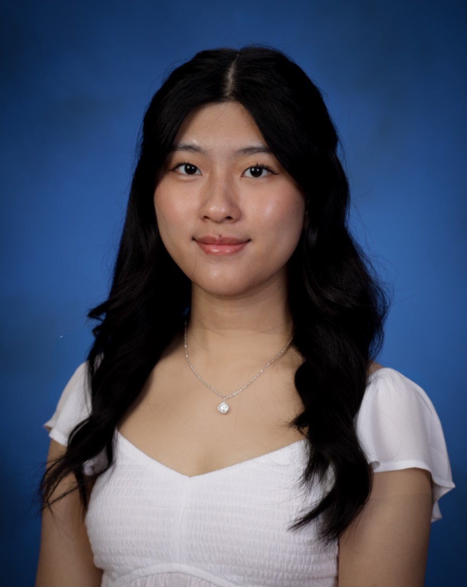
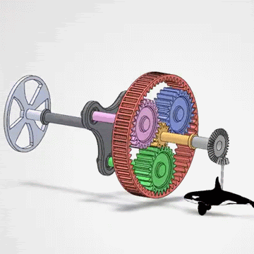
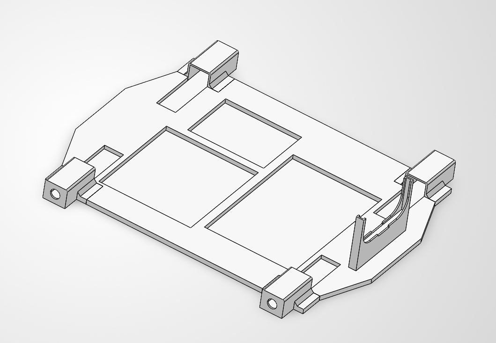
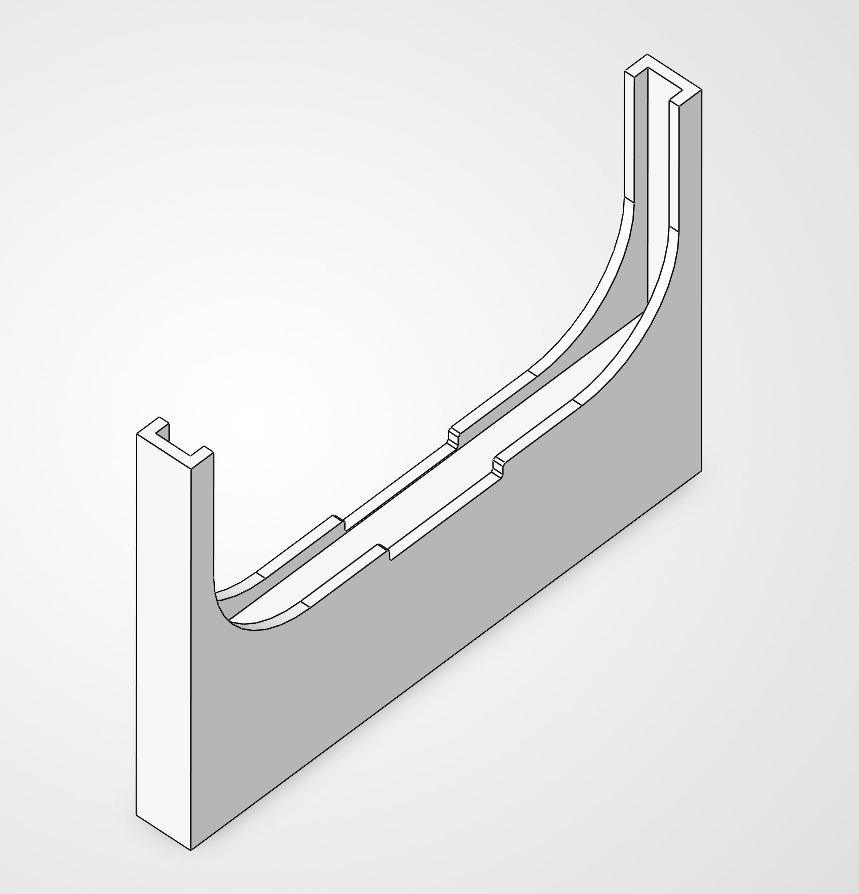
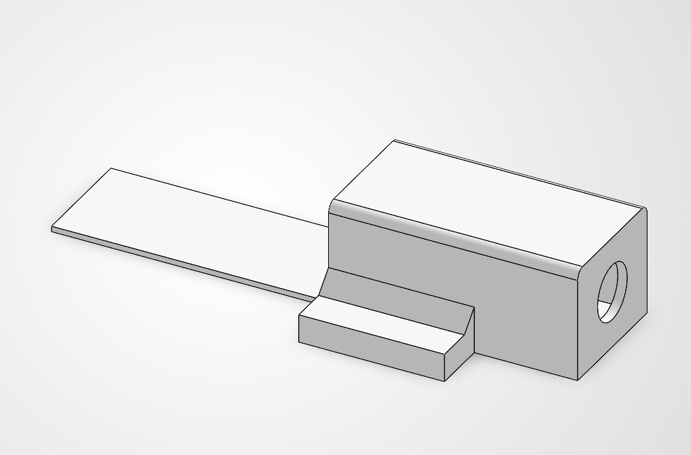

Freshman studying mechanical engineering at UT Austin, interested in mechanical design & materials science.

Currently exploringMechanical Design · Finite Element Analysis
01 / Projects
Projects
A few things I’ve been working on.

01 / 02
Gear Translation System
September 2026
Designed a planetary and bevel gear assembly to transfer rotation through a perpendicular axis at a 3:1 bevel gear ratio.
Verified motion and power transmission
Evaluated key components with FEA
02 / 02
Obstacle Avoidance Robot
July 2026
Designed, modeled, 3D-printed, wired, and coded an autonomous obstacle avoidance robot.
Iterated sensor, motor, battery, and breadboard mounts
Designed around printer tolerances and support reduction
See more ↘

Complete Chassis Model V3

Distance Sensor Mount

N20 Motor Mount
02 / About Me
About ME
I'm a freshman majoring in mechanical engineering at UT Austin with an interest in exploring materials science down the line. I'm meticulous, love to plan ahead, and am always prepared for the situation.
Outside of school and work, I love to spend time with friends and family, read, and explore new places.